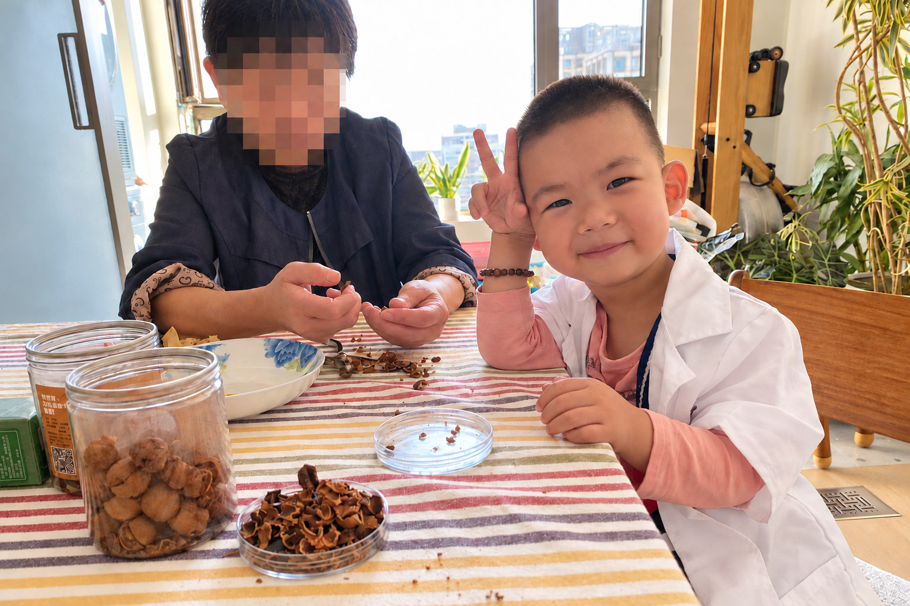
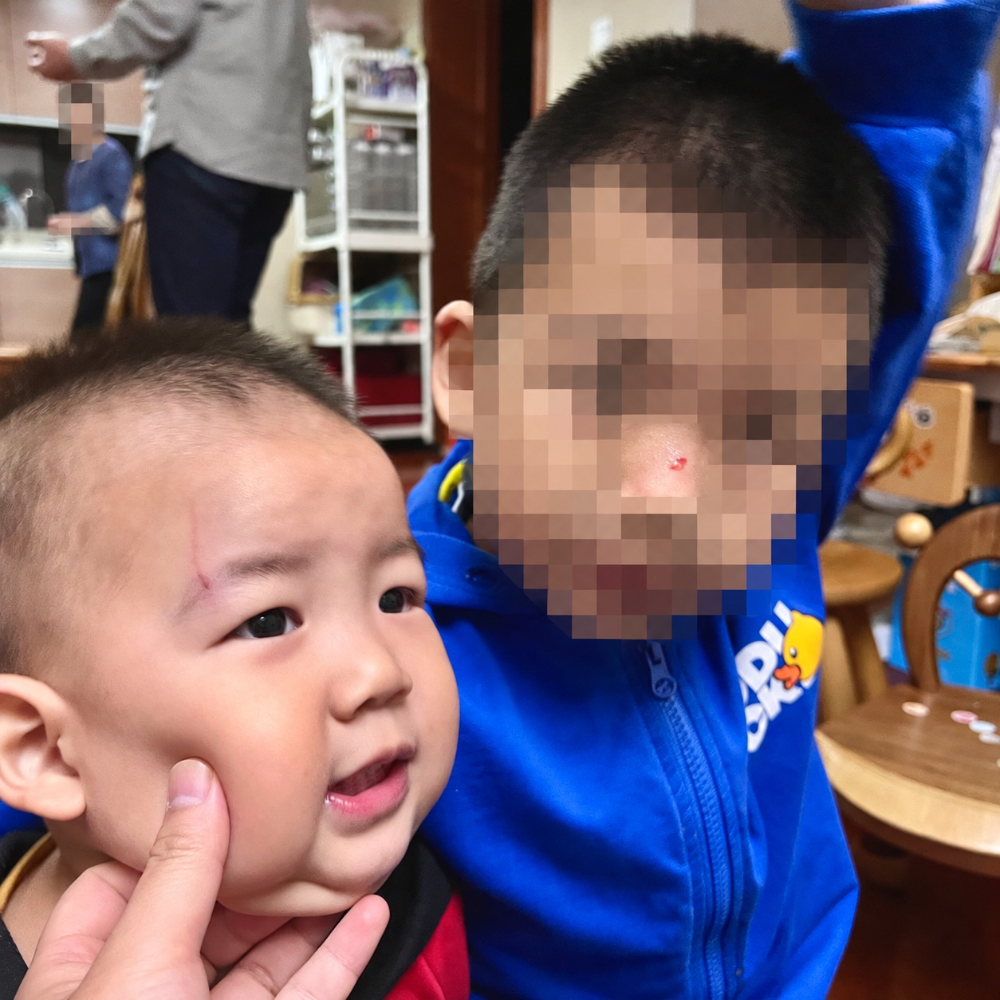
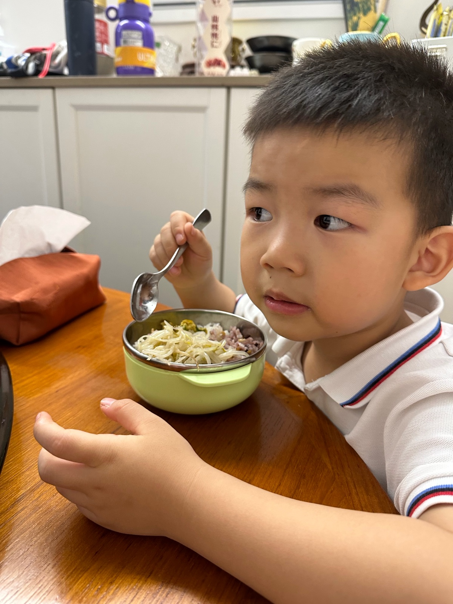
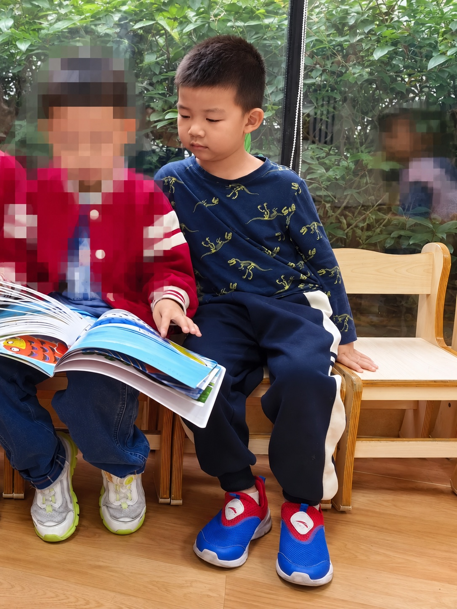
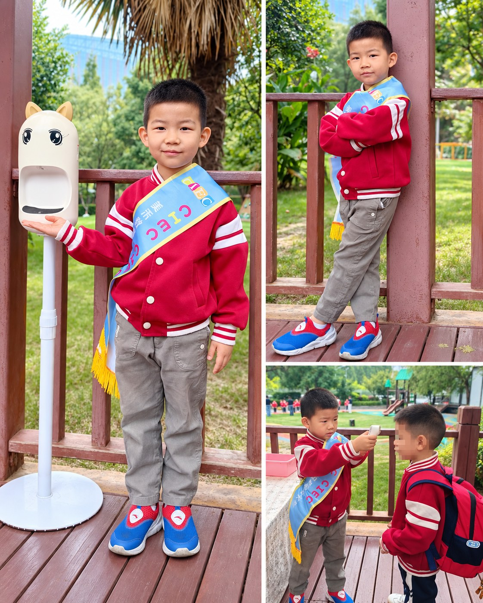

GEORGE'S LITTLE MOMENTS
Moments to keep.
One photograph for each day. Open a photograph to see the full day and its stories.
A photograph for each day
6 photos

A Little Doctor Beside Grandma
Sunday, 16 October 2022 · 21st day of the ninth month in the Chinese lunar calendar. Wearing his play doctor's coat, Yang Yu makes a V sign towards the camera while sitting beside Grandma, who is shelling walnuts. The photo has been retouched and edited with AI for privacy. Grandma's face is pixelated.


The boys both had scrapes
Photographed on Saturday, 16 October 2021 · 11th day of the ninth month in the Chinese lunar calendar. As I remember it, Yang Yu and his older brother both got hurt on the same day. When I came home that evening, I saw a scrape on his brother’s nose bridge and one by Yang Yu’s eyebrow, and took this photo of the two of them. The image has been edited with AI for privacy. His brother’s face and the person in the background have been obscured, while the scrape on his brother’s nose bridge remains visible.


His own bowl
Photographed on Wednesday, 15 October 2025 · 24th day of the eighth month in the Chinese lunar calendar. This was probably taken while Yang Yu was having dinner at home. The bowl in front of him was his own, and he was wearing the white polo shirt that was part of his kindergarten uniform.


Reading together by the window
Photographed on Thursday, 16 October 2025 · 25th day of the eighth month in the Chinese lunar calendar. At kindergarten, Yang Yu sat by the window with other children, looking at a picture book together. A teacher captured this moment. The image has been cropped and edited with AI to protect privacy. The other children have been obscured.

Looking up at Mum’s phone
Original video filmed on Tuesday, 14 October 2025 · 23rd day of the eighth month in the Chinese lunar calendar. Yang Yu leans over and tilts his head up. The photo has been edited with AI to remove the lift-door seam and adjust its colours.


On duty at kindergarten
Original photos taken on Monday, 13 October 2025 · 22nd day of the eighth month in the Chinese lunar calendar. Yang Yu on duty as a kindergarten helper.

We’ll tell the stories behind these photographs, a little at a time.